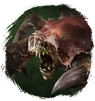
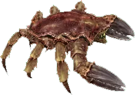

Открыть в интерактивной вики →

| Уровень | 60 |
|---|---|
| Прокачка | нет |
| Ранг в стае | 13 |
| Здоровье | 1600 |
| Мана | 1100 |
| Выносливость | 1100 |
| Статистика | Уровень: 60, ранг: 13, здоровье: 1600, мана: 1100, выносливость: 1100 |
Цена
25  Империал
Империал
ИмпериалГде взять
Покупается у Дрессировщика Питера  Дрессировщик Питер
Дрессировщик Питер
Дрессировщик ПитерНавыки


Доп. информация
Требуемый уровень: 60
Цена: 50 империалов
Покупка: у дрессировщика Питера
Может получать опыт — НЕТ
Описание
 | Ракообразное с титановым панцирем, защищающее выбранных членов отряда. Кроме того, умеет придать сил союзникам и напугать противников. Атакует физически, издалека и ментально. Использует: Боевой клич, Рёв, Толстокожесть, Сила единства, Укус, Плевок ядом, Защита. | |